The files you may need for this assignment can be downloaded here.
For this assignment, you are allowed to work with one other student if you wish (in fact, we suggest that you do so). If any student wishes to have a partner but has not been able to locate one, please let the instructor know so that we can match up partners.
Please make sure you adhere to the policies on academic integrity in this regard.
We have emphasized the importance of a class's "housekeeping" functions (the copy constructor, assignment operator, and destructor). At times we have differentiated between the default behaviors provided by C++ which perform what is known as a shallow copy, and our own implementation for providing what is known as a deep copy.
As an example, we gave a linked-list implementation of a stack in an earlier lecture. If we do not explicitly provide non-trivial housekeeping functions, the default copy constructor produces a shallow copy as portrayed in the following figure.
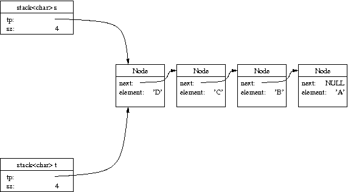
Such an image of a shallow copy should sound a warning for an experienced C++ programmer, as the two stacks do not seem to have independent state. Interestingly, in the case of a stack, things are not quite as bad as they seem. For example, if we make a call to s.push('E') using the original implementation, we get the following internal configuration.
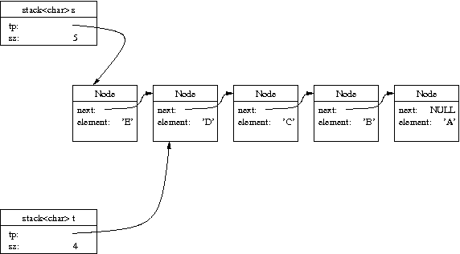
Yet this is not necessarily a disaster. From the perspective of s we seem to have a linked list of five elements, and from the perspective of t we seem to have a linked list of four elements.
If we were to continue with a call to t.pop() from this
point, we would set
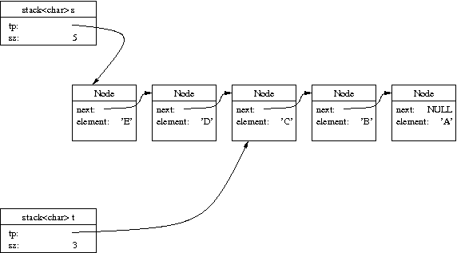
We do not yet have a disaster on our hands. In fact, if we used the original LinkedStack class with the default housekeeping functions, there are only two potential flaws with the entangled states.
The original version offered both a const and a non-const
version of top(). The non-const version is a problem
because it allows one to overwrite the data at the top of the
stack. If we were to do
To remedy this problem, we have chosen to remove the non-const version of top(). See the extra credit challenge if you would like to support this behavior.
The pop method was originally implemented as follows.
void pop() {
if (empty())
throw std::runtime_error("Access to empty stack");
Node* old = tp; // node to remove
tp = tp->next;
sz--;
delete old;
}
The pitfall here is the deletion of old. When a
stack is guaranteed to have its own independent linked list,
this step is important for avoiding a memory leak. If that were
not done, the node known as old would be forever
lost yet not deallocated. But if you look back at the previous
figures, such a call to t.pop() would inadvertently
free the node containing 'D', thereby invalidating the state of
stack s.
One remedy for this problem is simply to get rid of the command delete old. With that change, our public abstraction of a stack is valid. Even though we have used a shallow copy, we can subsequently manipulate both stacks independently without undesired side effects. The problem with this remedy is that our program has a huge memory leak, as nodes are created but never destroyed. In the next section, we describe a strategy for avoiding the memory leak.
The challenge we face is that sometimes when popping an item or deallocating a stack we need to delete a node, yet other times we need to leave such a node in memory because it is still part of a list for another stack. Our solution is to explicitly maintain a reference count for each node in the system. The reference count for a node is the number of live pointers that reference that node. Whenever a pointer is assigned to that node, the node's reference count should be incremented. Whenever a pointer to the node is reassigned elsewhere or outright destroyed, we decrement the node's reference count. When a node's reference count reaches zero it can safely be deleted as it is unreachable.
Your goal is to implement a stack class that creates shallow copies for the copy constructor and assignment operator, with the use of reference counting for deleting unused nodes. We will start you off with a working implementation of the stack class that creates deep copies.
For accounting purposes, the code we provide manages an additional variable SmartStack::total that counts the overall number of nodes in the system. Please do not confuse this variable with the above mentioned reference counting. The total variable is a single static variable, meaning that it is not part of an individual node's state but instead shared globally throughout the program. In order to keep an accurate count of the number of nodes, we execute total++ inside the Node class constructor and total-- within the Node class destructor. Although you are welcome to make changes to those routines, please do not alter our management of the total variable.
stack<char> r;
r.push('X');
r.push('Y');
r.push('Z');
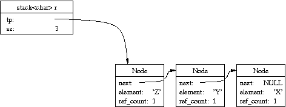
stack<char> s;
s.push('A');
s.push('B');
s.push('C');
s.push('D');
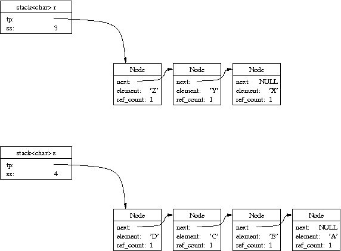
stack<char> t(s);
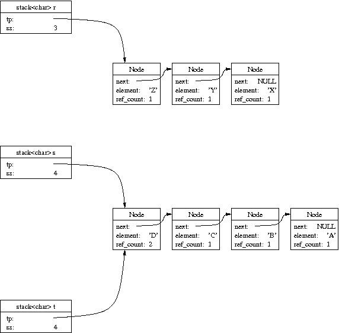
s.push('E');
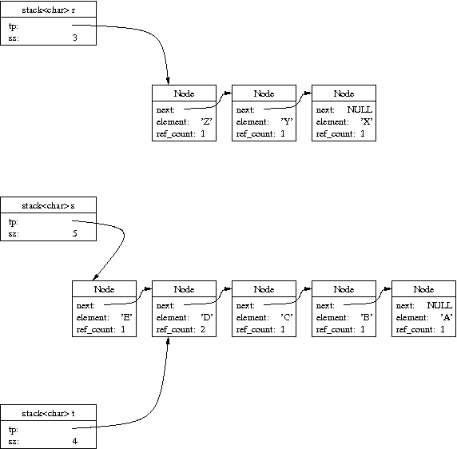
t.pop();
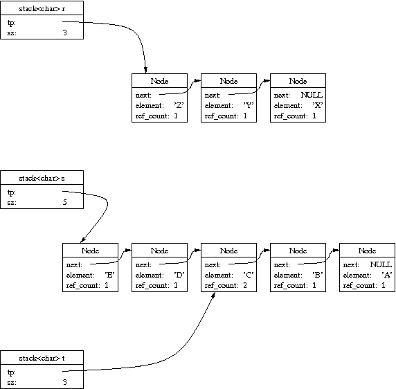
s = r;
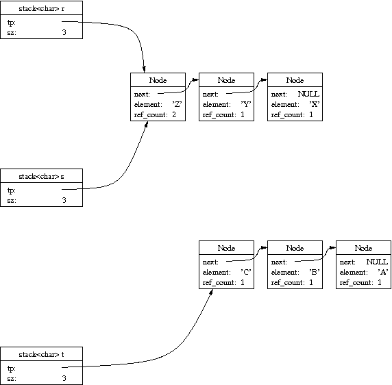
r.pop();
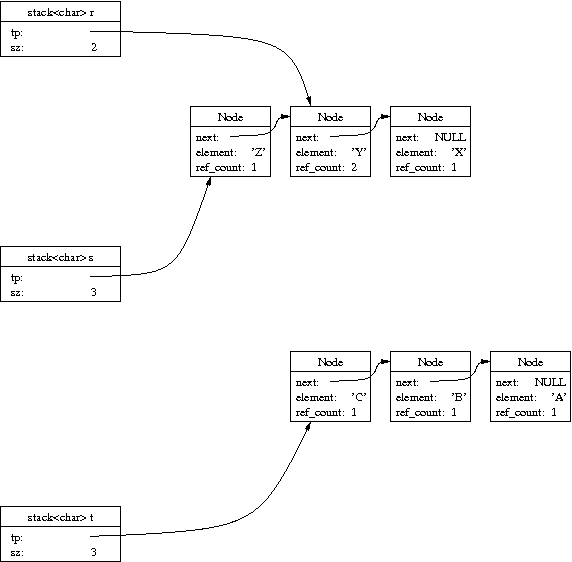
r.push('W');
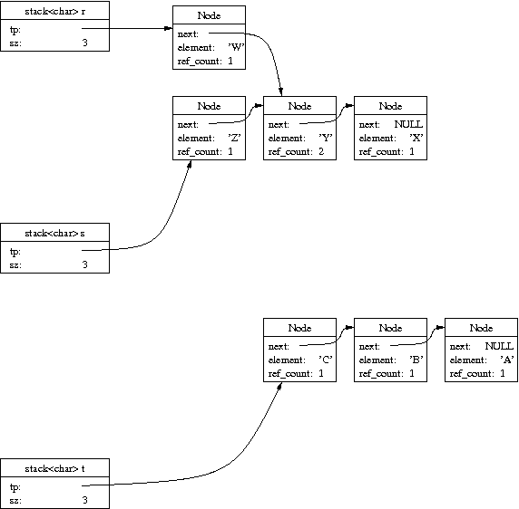
s.push('V');
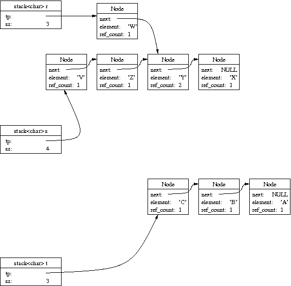
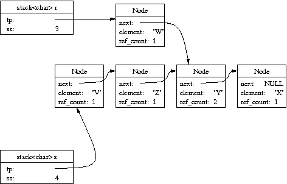
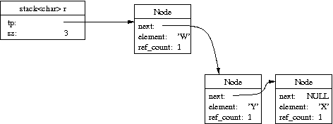
We offer the above example to demonstrate many of the complexities that arise for smart stacks. However, succeeding on this one example does not guarantee that your code is valid for all scenarios. You are responsible for thoroughly testing your own program, and we will certainly be running many additional tests when grading.
Also, please note that the dump method we have provided is used to print the element values in the underlying linked list. We strongly recommend having you change that method to include output for the reference counts as well, to provide you a more detailed behind-the-scene glimpse at the state of your stacks.
All such files can be downloaded here.
smart_stack.h
This is the implementation of the stack using traditional house
keeping functions that perform a deep copy. It is based upon
the version that we examined in an earlier lecture, although we
have nodes explicitly declared in the stack class here rather than
using the SLinkedList class as a private value. We also
have added a bit of debugging code to the Node class to
keep track of the total number of nodes that currently exist in
the system.
Note: For the sake of simplicity, we did not bother to separate out the function bodies for the class into a separate "smart_stack.cpp" file. All the function bodies are embeded directly into the header. You should make your changes directly to the .h file as well.
test_smart_stack.cpp
A sample program that walks through the detailed example
portrayed above. You are welcome to change
this file to perform additional tests.
Note: unlike some earlier assignments, we are not asking your to formally submit your test cases.
makefile
This makefile should allow you to rebuild your project by
simply typing 'make' rather than in invoking the compiler
directly.
Source Code
Submit your revised smart_stack.h file.
"readme" file
Discuss the dynamics of your partnership, an overview of your
final product, and any further comments you
wish to make to the grader.
The assignment is worth 10 points. Points will be assigned for correctness of your code as well as commenting and clarity; please note that the readme (including a clear description of any remaining issues in your code) will also be graded.